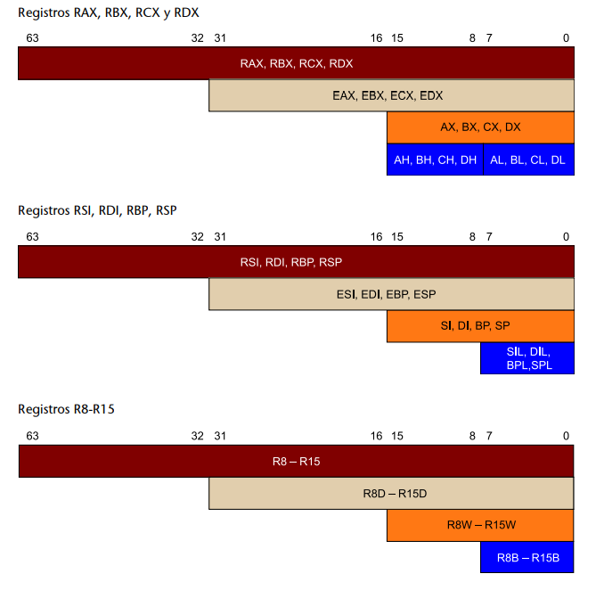
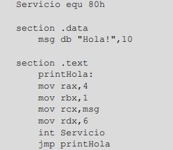
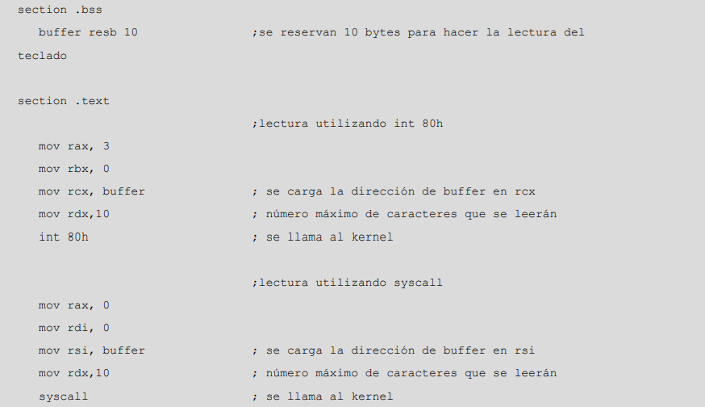
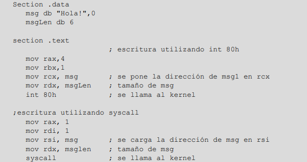
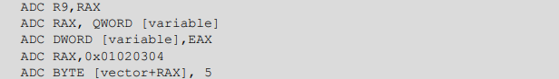
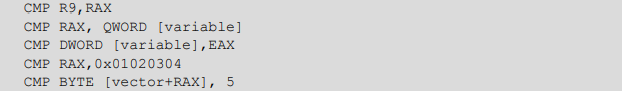
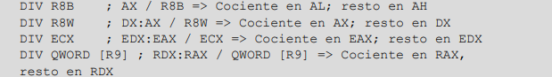

Programación
en Ensamblador
1. Arquitectura del computador
1.1.1. Modo extendido de 64 bits
El modo extendido de 64 bits es utilizado por los sistemas operativos de 64
bits. Dentro de este modo general, se dispone de un modo de operación de
64 bits y de un modo de compatibilidad con los modos de operación de las
arquitecturas de 16 y 32 bits.
En un sistema operativo de 64 bits, los programas de 64 bits se ejecutan en
modo de 64 bits y las aplicaciones de 16 y 32 bits se ejecutan en modo de
compatibilidad. Los programas de 16 y 32 bits que se tengan que ejecutar en
modo real o virtual x86 no se podrán ejecutar en modo extendido si no son
emulados.
1.1.2. Modo heredado de 16 y 32 bits
El modo heredado de 16 y 32 bits es utilizado por los sistemas operativos
de 16 y 32 bits. Cuando el sistema operativo utiliza los modos de 16 bits o
de 32 bits, el procesador actúa como un procesador x86 y solo se puede
ejecutar código de 16 o 32 bits. Este modo solo permite utilizar
direcciones de 32 bits, de manera que limita el espacio de direcciones
virtual a 4 GB.
1)
Modo real:
Implementa el modo de programación del Intel 8086, con algunas extensiones,
como la capacidad de poder pasar al modo protegido o al modo de gestión del
sistema. El procesador se coloca en modo real al iniciar el sistema y
cuando este se reinicia.
2)
Modo protegido
: Este es el modo por defecto del procesador. Permite utilizar
características como la memoria virtual, la paginación o la computación
multitarea.
3)
Modo virtual 8086
: Este modo permite ejecutar programas de 16 bits como tareas dentro del
modo protegido.
1.2 El modo de 64 bits
Los elementos que desde el punto de vista del programador son visibles en
este modo de operación son los siguientes:
1) Espacio de memoria: un programa en ejecución en este
modo puede acceder a un espacio de direcciones lineal de 264 bytes. El
espacio físico que realmente puede dirigir el procesador es inferior y
depende de la implementación concreta de la arquitectura.
2) Registros: hay 16 registros de propósito general de 64
bits, que soportan operaciones de byte (8 bits), Word (16 bits), double
word (32 bits) y quad word (64 bits).
• El registro contador de programa (RIP, instruction pointer register) es
de 64 bits.
• El registro de bits de estado también es de 64 bits (RFLAGS). Los 32 bits
de la parte alta están reservados; los 32 bits de la parte bajan son
accesibles y corresponden a los mismos bits de la arquitectura IA-32
(registro EFLAGS).
• Los registros de segmento en general no se utilizan en el modo de 64
bits.
1.2.1. Organización de la memoria
Al trabajar en un espacio lineal de direcciones, no se utilizan mecanismos
de segmentación de la memoria, de manera que no son necesarios los
registros de segmentos, excepto los registros de segmento FS y GS, que se
pueden utilizar como registro base en el cálculo de direcciones de los
modos de direccionamiento relativo.
Paginación:
Este mecanismo es transparente para los programas de aplicación, y por lo
tanto para el programador, y viene gestionado por el hardware del
procesador y el sistema operativo.
Las direcciones virtuales son traducidas a direcciones físicas de memoria
utilizando un sistema jerárquico de tablas de traducción gestionadas por el
software del sistema (sistema operativo).
Orden de los bytes:
Los procesadores x86-64 utilizan un sistema de ordenación de los bytes
cuando se accede a los datos que se encuentran almacenados en la
memoria. En concreto, se utiliza un sistema little-endian, en el cual el
byte de menos peso de un dato ocupa la dirección más baja de memoria.
Tamaño de las direcciones:
Los programas que se ejecutan en el modo de 64 bits generan directamente
direcciones de 64 bits.
Modo compatibilidad:
Los programas que se ejecutan en el modo compatibilidad generan direcciones
de 32 bits. Estas direcciones son extendidas añadiendo ceros a los 32 bits
más significativos de la dirección. Este proceso es gestionado por el
hardware del procesador y es transparente para el programador.
Tamaño de los desplazamientos y de los valores inmediatos:
En el modo de 64 bits los desplazamientos utilizados en los
direccionamientos relativos y los valores inmediatos son siempre de 32
bits, pero vienen extendidos a 64 bits manteniendo el signo. Hay una
excepción a este comportamiento: en la instrucción MOV se permite
especificar un valor inmediato de 64 bits.
1.2.2. Registros
Los procesadores de la arquitectura x86-64 disponen de un banco de registros
formado por registros de propósito general y registros de propósito específico.
Registros de propósito general hay 16 de 64 bits y de propósito específico hay
6 registros de segmento de 16 bits, también hay un registro de estado de 64
bits (RFLAGS) y un registro contador de programa también de 64 bits (RIP).
Registros de propósito general
Son 16 registros de datos de 64 bits (8 bytes): RAX, RBX, RCX, RDX, RSI, RDI,
RBP, RSP y R8-R15
Los 8 primeros registros se denominan de manera parecida a los 8 registros de
propósito general de 32 bits disponibles en la arquitectura IA-32 (EAX, EBX,
ECX, EDX, ESI, EDI, EBP y ESP).
Los registros son accesibles de cuatro maneras diferentes:
1) Como registros completos de 64 bits (quad word).
2) Como registros de 32 bits (double word), accediendo a los 32 bits de menos
peso
3) Como registros de 16 bits (word), accediendo a los 16 bits de menos peso.
4) Como registros de 8 bits (byte), permitiendo acceder individualmente a uno
o dos de los bytes de menos peso según el registro.
El acceso a registros de byte tiene ciertas limitaciones según el registro. A continuación se presenta la nomenclatura que se utiliza según si se quiere acceder
a registros de 8, 16, 32 o 64 bits y según el registro.

Limitaciones en el uso de los registros de propósito general:
• En una misma instrucción no se puede usar un registro del conjunto AH,
BH, CH, DH junto con uno del conjunto SIL, DIL, BPL, SPL, R8B – R15B.
• Registro RSP: tiene una función especial, funciona como apuntador de pila, contiene siempre la dirección del primer elemento de la pila. Si lo utilizamos con otras finalidades, perderemos el acceso a la pila.
• Registro RSP: tiene una función especial, funciona como apuntador de pila, contiene siempre la dirección del primer elemento de la pila. Si lo utilizamos con otras finalidades, perderemos el acceso a la pila.
• Cuando se utiliza un registro de 32 bits como operando destino de una
instrucción, la parte alta del registro está fijada en 0.
Registros de propósito específico
1)Registros de segmento: hay 6 registros de segmento de 16 bits.
En el modo de 64 de bits, estos registros prácticamente no se utilizan, ya que
se trabaja con el modelo de memoria lineal y el valor de estos registros se encuentra fijado en 0 (excepto en los registros FS y GS, que pueden ser utilizados
como registros base en el cálculo de direcciones).
2)Registro de instrucción o instruction pointer(RIP)
Es un registro de 64 bits que actúa como registro contador de programa (PC) y contiene la dirección efectiva (o dirección lineal) de la instrucción siguiente que se ha de ejecutar
3)Registro de estado o Flags register(RFLAGS)
contiene información sobre el estado del procesador e información sobre el
resultado de la ejecución de las instrucciones.
3.2.1. Definición de constantes
Realmente una constante es un nombre que se
da para referirse a un valor determinado y quee no puede ser modificado por ninguna instrucción del código.
La declaración de constantes se puede hacer en cualquier parte del programa:
al principio del programa fuera de las secciones .data, .bss, .text o dentro de
cualquiera de las secciones anteriores.
Para definir constantes se utiliza la directiva equ, de la manera siguiente:
nombre_constante equ valor
Ejemplos de definiciones de constantes:
tamañoVec equ 5
ServicioSO equ 80h
Mensaje1 equ 'Hola'
3.2.2. Definición de variables
La declaración de variables en un programa en ensamblador se puede incluir
en la sección .data o en la sección .bss, según el uso de cada una.
Sección .data, variables inicializadas
• db: define una variable de tipo byte, 8 bits
• dw: define una variable de tipo palabra (word), 2 bytes = 16 bits.
• dd: define una variable de tipo doble palabra (double word), 2 palabras =4 bytes = 32 bits.
• dq: define una variable de tipo cuádruple palabra (quad word), 4 palabras= 8 bytes = 64 bits.
Ejemplos:
Los valores hexadecimales han de empezar por 0x, 0h o $, o deben finalizarcon una h.
-> var1 db 255 ; define una variable con el valor FFh
-> Var2 dw 65535 ; en hexadecimal FFFFh
-> var4 dd 4294967295 ; en hexadecimal FFFFFFFFh
-> var8 dq 18446744073709551615 ; en hexadecimal FFFFFFFFFFFFFFFFh
Los valores numéricos se consideran por defecto en decimal, pero también se
puede indicar explícitamente que se trata de un valordecimal finalizando el
número con el carácter d
-> var db 67 ;el valor 67 decimal
Los valores binarios han de empezar por 0b o finalizar con el carácter b
-> var db 0b01000011
-> var dw 0110_0100_0011b
Los caracteres y las cadenas de caracteres han de escribirse entre comillas
simples (''), dobles ("") o comillas abiertas backquotes (` `)
Las cadenas de caracteres (strings) se definen de la misma manera:
-> cadena db 'Hola' ;define una cadena formada por 4 caracteres
Los vectores en ensamblador se definen con un nombre de variable e indicando a continuación los valores que forman el vector.
-> vector1 db 23, 42, -1, 65, 14 ;vector formado por 5 valores de tipo byte
Sección .bss, variables no inicializadas
Dentro de esta sección se declaran y se reserva espacio para las variables de
nuestro programa para las cuales no queremos dar un valor inicial.
• resb: reserva espacio en unidades de byte
• resw: reserva espacio en unidades de palabra, 2 bytes
• resd: reserva espacio en unidades de doble palabra, 4 bytes
• resq: reserva espacio en unidades de cuádruple palabra, 8 bytes
Ejemplos
section .bss
var1 resb 1 ;reserva 1 byte
var2 resb 4 ;reserva 4 bytes
var3 resw 2 ;reserva 2 palabras = 4 bytes, equivalente al caso anterior
var3 resd 1 ;reserva una cuádruple palabra = 4 bytes, equivalente a los dos casos anteriores
3. El lenguaje de ensamblador para la arquitectura x86-64
3.3 Formato de la instrucciones
3.3.1. Etiquetas
Una etiqueta hace referencia a un elemento dentro del programa ensamblador.
Su función es facilitar al programador la tarea de hacer referencia a diferentes
elementos del programa. Las etiquetas sirven para definir constantes, variables
o posiciones del código y las utilizamos como operandos en las instrucciones
o directivas del programa.
EJEMPLO:

3.4 Juego de instrucciones y modos de direccionamiento
3.4.1. Tipos de operandos de las instrucciones x86-64
Operandos fuente y destino
En las instrucciones con un solo operando, este se puede comportar solo como operando fuente, solo como operando destino o como operando fuente
y destino.
EJEMPLO:
push rax
El registro rax es un operando fuente; la instrucción almacena el valor del operando
fuente en la pila del sistema, de manera que la pila es un operando destino implícito.
En las instrucciones con dos operandos, el primer operando se puede comportar como operando fuente y/o destino, mientras que el segundo operando se
comporta siempre como operando fuente.
EJEMPLO:
mov rax, rbx
El primer operando se comporta solo como operando destino; la instrucción almacena
el valor indicado por el segundo operando en el primer operando (rax = rbx).
Localización de los operandos
1. Inmediatos: En las instrucciones de dos operandos, se puede utilizar un
valor inmediato como operando fuente; algunas instrucciones de un operando
también admiten un valor inmediato como operando. Los valores inmediatos
se pueden expresar como valores numéricos (decimal, hexadecimal, octal o
binario) o como caracteres o cadenas de caracteres. También se pueden utilizar
las constantes definidas en el programa como valores inmediatos.
EJEMPLO:
mov al, 10 b ;un valor inmediato expresado en binario
2. Registros: Los registros se pueden utilizar como operando fuente y como
operando destino. Podemos utilizar registros de 64 bits, 32 bits, 16 bits y 8
bits. Algunas instrucciones pueden utilizar registros de manera implícita.
EJEMPLO:
mov al, 100
3.Memoria: Las variables declaradas a memoria se pueden utilizar como operandos fuente y destino. En el caso de instrucciones con dos operandos,solo uno de los operandos puede acceder a la memoria, el otro ha de ser un
registro o un valor inmediato (y este será el operando fuente).
EJEMPLO:
mov rax, var1 ;se carga en rax la dirección de la variable var
Tamaño de los operandos
BYTE: indica que el tamaño del operando es de un byte (8 bits).
WORD: indica que el tamaño del operando es de una palabra (word) o dos
bytes (16 bits).
DWORD: indica que el tamaño del operando es de una doble palabra (double word) o cuatro bytes (32 bits).
QWORD: indica que el tamaño del operando es de una cuádruple palabra
(quad word) u ocho bytes (64 bits)
3.4.2. Modos de direccionamiento
1.Inmediato:
En este caso, el operando hace referencia a un dato que se encuentra en la instrucción misma. No hay que hacer ningún acceso extra a memoria para obtenerlo. Solo podemos utilizar un direccionamiento inmediato
como operando fuente. El número especificado ha de ser un valor que se pueda
expresar con 32 bits como máximo, que será el resultado de evaluar una expresión aritmética formada por valores numéricos y operadores aritméticos y
también sumar una dirección de memoria representada mediante una etiqueta (nombre de una variable), con la excepción de la instrucción mov cuando
el primer operando es un registro de 64 bits, para el que podremos especificar
un valor que se podrá expresar con 64 bits.
EJEMPLO:
mov rax, 0102030405060708h ;el segundo operando utiliza direccionamiento inmediato expresado con 64 bits.
2.Directo a registro:
En este caso, el operando hace referencia a un dato que
se encuentra almacenado en un registro. En este modo de direccionamiento
podemos especificar cualquier registro de propósito general (registros de datos,
registros índice y registros apuntadores)
EJEMPLO:
mov rax, rbx ;los dos operandos utilizan direccionamiento directo a registro, rax = rbx
3.Directo a memoria:
En este caso, el operando hace referencia a un dato que
se encuentra almacenado en una posición de memoria. El operando habrá de
especificar el nombre de una variable de memoria entre corchetes [ ]; cabe recordar que en sintaxis NASM se interpreta el nombre de una variable sin corchetes como la dirección de la variable y no como el contenido de la variable.
EJEMPLO:
mov rax,[var] ;el segundo operando utiliza direccionamiento directo a memoria, rax = [var]
4.Indirecto a registro:
En este caso, el operando hace referencia a un dato
que se encuentra almacenado en una posición de memoria. El operando habrá
de especificar un registro entre corchetes [ ]; el registro contendrá la dirección
de memoria a la cual queremos acceder
EJEMPLO:
mov rbx, var ;se carga en rbx la dirección de la variable var
3.4.3 Tipos de instrucciones
Estas instrucciones son las siguientes: IF, ELSE, ELSE IF y END IF.
Sintaxis
- IF condition
- ELSE
- ELSE IF condition
- END IF
Parámetros
condition: Una de las siguientes condiciones:
Una expresión absoluta = La expresión no debe contener referencias hacia delante o externas y cualquier valor que no sea cero es considerado como verdadero.
string1 = string2 = La condición es verdadera si la cadena1 y la cadena2 tienen la misma longitud y contenido.
string1 < > string2 = La condición es verdadera si la cadena1 y la cadena2 tienen distinta longitud o contenido.
Descripción
Utilice las directivas IF, ELSE y ENDIF para controlar el proceso de ensamblado en el tiempo de ensamblado. Si la condición que sigue a la directiva IF no es verdadera, las siguientes instrucciones no generarán ningún código hasta que se encuentre alguna directiva ELSE o ENDIF.
Utilice ELSEIF para introducir una nueva condición después de la directiva IF. Las directivas de ensamblador condicionales pueden usarse en cualquier sitio en el ensamblado, pero tienen su mayor uso en conjunción con los procesos de macros.
Todas las directivas de ensamblador (excepto END) así como la inclusión de archivos puede ser deshabilitada por las directivas condicionales. Cada directiva IF debe acabar con una directiva ENDIF. La directiva ELSE es opcional, y si se usa, debe estar en un bloque IF ... ENDIF. Los bloques IF ... ENDIF e IF ... ELSE ... ENDIF pueden estar anidados a cualquier nivel.
Ejemplos
La siguiente macro resta una constante del par de registros R25:R24.
subW MACRO c
IF c<64
SBIW R25:R24, c
ELSE
SUBI R24, LOW(c)
SBCI R25, c >> 8
ENDIF
ENDM
Si el argumento de la macro es menor que 64, es posible usar la instrucción SBIW para salvar dos bytes de memoria de código.
Estructura while
Estructura iterativa controlada por una condición expresada al principio:
while (condiciones)
{
bloque de sentencias que ejecutar
}
Ejemplo
mov rax, 1 ;rax será [resultado]
mov rbx, qword [num] ;Se carga la variable en un registro
while:
cmp rbx, 1 ;Se hace la comparación
jg cierto ;Si se cumple la condición (num > 1) salta a cierto
jmp fin ;Si no, salta a fin
cierto:
imul rax, rbx ;rax = rax * rbx
dec rbx
jmp while
fin:
mov qword [resultado], rax
mov qword [num], rbx
Estructura do-while
Estructura iterativa controlada por una condición expresada al final:
Ejemplo
mov rax, 1 ;rax será [resultado]
mov rbx, qword [num] ;Se carga la variable en un registro
while:
imul rax, rbx
dec rbx
cmp rbx, 1 ;Se hace la comparación
jg while ;Si se cumple la condición salta a while
mov qword [resultado], rax
mov qword [num], rbx
Estructura for
Estructura iterativa, que utiliza la orden for:
Ejemplo
mov rax, 1 ;rax será [resultado]
mov rcx, qword [num] ;rcx será [i] que inicializamos con [num]
for:
cmp rcx, 1 ;Se hace la comparación
jg cierto ;Si se cumple la condición, salta a cierto
jmp fin
cierto:
imul rax,rcx
dec rcx
jmp for
fin:
mov qword [resultado], rax
mov qword [i], rcx
Al salir de la estructura iterativa, no actualizamos la variable num porque se
utiliza para inicializar i pero no se cambia.
5.4.1. Definicion de subrutinas en ensamblador
5.4.1. Definicion de subrutinas en ensamblador
Una subrutina puede necesitar que se le transfieran parámetros; los
parámetros se pueden pasar mediante registros o la pila. Sucede lo mismo
con el re[1]torno de resultados, que puede efectuarse por medio de registro
o de la pila. Consideraremos los casos en los que el número de parámetros
de entrada y de retorno de una subrutina es fijo. Paso de parámetros y
retorno de resultado por medio de registros Debemos definir sobre qué
registros concretos queremos pasar parámetros a la subrutina y sobre qué
registros haremos el retorno; podemos utilizar cualquier registro de
propósito general del procesador. Una vez definidos los registros que
utilizaremos para hacer el paso de parámetros, deberemos asignar a cada uno
el valor que queremos pasar a la subrutina antes de hacer call; para
devolver los valores, dentro de la subrutina, tendremos que asignar a los
registros correspondientes el valor que se debe devolver antes de hacer
ret. Recordemos que los registros que se utilicen para devolver un valor no
se han de almacenar en la pila al inicio de la subrutina, ya que no hay que
conservar el valor inicial. Supongamos que en el ejemplo del factorial
queremos pasar como parámetro un número cuyo factorial queremos calcular, y
devolver como resultado el factorial del número transferido como parámetro,
implementando el paso de parámetros y el retorno de resultados por medio de
registros. El número cuya factorial queremos calcular lo pasaremos por
medio del registro RBX y devolveremos el resultado al registro RAX. La
llamada de la subrutina será:
mov rbx, 5
call factorial
;En rax tendremos el valor del factorial de 5 (=120)
Subrutina:
factorial:
push rbx ; Almacenar en la pila el registro que modificamos
; y que no se utiliza para devolver el resultado.
; Instrucciones de la subrutina
mov rax, 1 ; rax será el resultado
while:
imul rax, rbx
dec rbx cmp rbx, 1 ; Se hace la comparación
jg while ; Si se cumple la condición salta a while
; En rax tendremos el valor del factorial de rbx
pop rbx ; Restauramos el valor inicial del registro
ret
Paso de parámetros y retorno de resultado por medio de la pila Si queremos
pasar parámetros y devolver resultados a una subrutina utilizando la pila,
y una vez definidos los parámetros que queremos pasar y los que queremos
retornar, hay que hacer lo siguiente: 1) Antes de hacer la llamada a la
subrutina: es necesario reservar espacio en la pila para los datos que
queremos devolver y a continuación introducir los parámetros necesarios en
la pila. 2)Dentro de la subrutina: hay que acceder a los parámetros
leyéndolos di[1]rectamente de memoria, utilizando un registro que apunté a
la cima de la pila. El registro apuntador de pila, RSP, siempre apunta a la
cima de la pila y, por lo tanto, podemos acceder al contenido de la pila
haciendo un direccionamiento a memoria que utilice RSP, pero si utilizamos
la pila dentro de la subrutina, no se recomienda utilizarlo. El registro
que se suele utilizar como apuntador para acceder a la pila es el registro
RBP. Antes de utilizarlo, lo tendremos que almacenar en la pila para poder
recuperar el valor inicial al final de la subrutina, a continuación, se
carga en RBP el valor de RSP. RBP no se debe cambiar dentro de la
subrutina; al final de esta se copia el valor sobre RSP para restaurar el
valor inicial. 3) Después de ejecutar a subrutina: una vez fuera de la
subrutina es necesario liberar el espacio utilizado por los parámetros de
entrada y después recuperar los resultados del espacio que hemos reservado
antes de hacer la llamada. CC-BY-SA • PID_00178132 75 Programación en
ensamblador (x86-64) Supongamos que en el ejemplo de la factorial queremos
pasar como parámetro el número cuyo factorial queremos calcular y devolver
como resultado el factorial del número pasado como parámetro, implementando
el paso de parámetros y el retorno de resultados por medio de la pila.
La llamada de la subrutina:
sub rsp,8 ; Reservamos 8 bytes para el resultado que devolvemos
mov rbx, 5
push rbx; Introducimos el parámetro de entrada en la pila
call factorial
add rsp,8 ; Liberamos el espacio utilizado por el parámetro de entrada
pop rax ; Recuperamos el resultado devuelto sobre el registro rax
Variables locales En los lenguajes de alto nivel es habitual definir
variables locales dentro de las funciones definidas en un programa. Las
variables locales ocupan un espacio definido dentro de la pila. Ahora
veremos cómo reservar espacio para variables locales en subrutinas
definidas en ensamblador. Para reservar el espacio necesario, hemos de
saber cuántos bytes utilizaremos como variables locales. A continuación, es
necesario decrementar el valor del apuntador a pila RSP tantas unidades
como bytes se quieran reservar para las variables locales; de esta manera,
si utilizamos las instrucciones que trabajan con la pila dentro de la
subrutina (push y pop) no sobrescribiremos el espacio de las variables
locales. La actualización de RSP se hace justo después de actualizar el
registro que utilizamos para acceder a la pila, RBP.
subrutina:
push rbp ; Almacenar el registro que utilizaremos
; de apuntador a la pila rbp
mov rbp, rsp ; Asignar a RBP el valor del registro apuntador RSP
sub rsp, n ; n indica el número de bytes reservados para las
; variables locales
;
; Instrucciones de la subrutina
mov rsp, rbp ; Restauramos el valor inicial de RSP con
RBP
pop rbp ; Restauramos el valor inicial de RBP
ret
Como las variables locales están en la pila, se utiliza también el registro
apuntador RBP para acceder a las variables. Se utiliza un direccionamiento
indexado sobre el registro RBP para acceder al espacio reservado, restando
un valor al registro RSP.
Ejemplo
push rbp ;Almacenar el registro que utilizaremos
;de apuntador a la pila rbp
mov rbp, rsp ;Asignar a RBP el valor del registro apuntador RSP
sub rsp, 8 ;reservamos 8 bytes para variables locales
mov al, byte[RBP-1] ;accedemos a 1 byte de almacenamiento local
mov ax, word[RBP-2] ;accedemos a 2 bytes de almacenamiento local
mov eax, dword[RBP-4] ;accedemos a 4 bytes de almacenamiento local
mov rax, qword[RBP-8] ;accedemos a 8 bytes de almacenamiento local
5.4.2. LLamada y retorno de subrutina
5.4.2. LLamada y retorno de subrutina
5.4.2. Llamada y retorno de subrutina
Para hacer la llamada a la subrutina se utiliza la instrucción call y se
indica la etiqueta que define el punto de entrada a la subrutina:
call factorial
La instrucción call almacena en la pila la dirección de retorno (la
dirección de la instrucción que se encuentra a continuación de la
instrucción call) y entonces transfiere el control del programa a la
subrutina, cargando en el registro RIP la dirección de la primera
instrucción de la subrutina. Funcionalmente, la instrucción call anterior
sería equivalente a:
sub rsp, 8
mov qword[rsp], rip
mov rip, factorial
Para finalizar la ejecución de la subrutina, ejecutaremos la instrucción
ret, que recupera de la pila la dirección del registro RIP que hemos
almacenado al hacer call y la carga otra vez en el registro RIP; continúa
la ejecución del programa con la instrucción que se encuentra después de
call. Funcionalmente, la instrucción ret sería equivalente a:
mov rip, qword[rsp]
add rsp, 8
5.4.3. Paso de parámetros a la subrutina y retorno de resultados
5.4.3. Paso de parámetros a la subrutina y retorno de resultados
Una subrutina puede necesitar que se le transfieran parámetros; los
parámetros se pueden pasar mediante registros o la pila. Sucede lo mismo
con el re[1]torno de resultados, que puede efectuarse por medio de registro
o de la pila. Consideraremos los casos en los que el número de parámetros
de entrada y de retorno de una subrutina es fijo. Paso de parámetros y
retorno de resultado por medio de registros Debemos definir sobre qué
registros concretos queremos pasar parámetros a la subrutina y sobre qué
registros haremos el retorno; podemos utilizar cualquier registro de
propósito general del procesador. Una vez definidos los registros que
utilizaremos para hacer el paso de parámetros, deberemos asignar a cada uno
el valor que queremos pasar a la subrutina antes de hacer call; para
devolver los valores, dentro de la subrutina, tendremos que asignar a los
registros correspondientes el valor que se debe devolver antes de hacer
ret. Recordemos que los registros que se utilicen para devolver un valor no
se han de almacenar en la pila al inicio de la subrutina, ya que no hay que
conservar el valor inicial. Supongamos que en el ejemplo del factorial
queremos pasar como parámetro un número cuyo factorial queremos calcular, y
devolver como resultado el factorial del número transferido como parámetro,
implementando el paso de parámetros y el retorno de resultados por medio de
registros. El número cuya factorial queremos calcular lo pasaremos por
medio del registro RBX y devolveremos el resultado al registro RAX. La
llamada de la subrutina será:
mov rbx, 5
call factorial
;En rax tendremos el valor del factorial de 5 (=120)
Subrutina:
factorial:
push rbx ; Almacenar en la pila el registro que modificamos
; y que no se utiliza para devolver el resultado.
; Instrucciones de la subrutina
mov rax, 1 ; rax será el resultado
while:
imul rax, rbx
dec rbx cmp rbx, 1 ; Se hace la comparación
jg while ; Si se cumple la condición salta a while
; En rax tendremos el valor del factorial de rbx
pop rbx ; Restauramos el valor inicial del registro
ret
Paso de parámetros y retorno de resultado por medio de la pila Si queremos
pasar parámetros y devolver resultados a una subrutina utilizando la pila,
y una vez definidos los parámetros que queremos pasar y los que queremos
retornar, hay que hacer lo siguiente: 1) Antes de hacer la llamada a la
subrutina: es necesario reservar espacio en la pila para los datos que
queremos devolver y a continuación introducir los parámetros necesarios en
la pila. 2)Dentro de la subrutina: hay que acceder a los parámetros
leyéndolos di[1]rectamente de memoria, utilizando un registro que apunté a
la cima de la pila. El registro apuntador de pila, RSP, siempre apunta a la
cima de la pila y, por lo tanto, podemos acceder al contenido de la pila
haciendo un direccionamiento a memoria que utilice RSP, pero si utilizamos
la pila dentro de la subrutina, no se recomienda utilizarlo. El registro
que se suele utilizar como apuntador para acceder a la pila es el registro
RBP. Antes de utilizarlo, lo tendremos que almacenar en la pila para poder
recuperar el valor inicial al final de la subrutina, a continuación, se
carga en RBP el valor de RSP. RBP no se debe cambiar dentro de la
subrutina; al final de esta se copia el valor sobre RSP para restaurar el
valor inicial. 3) Después de ejecutar a subrutina: una vez fuera de la
subrutina es necesario liberar el espacio utilizado por los parámetros de
entrada y después recuperar los resultados del espacio que hemos reservado
antes de hacer la llamada. CC-BY-SA • PID_00178132 75 Programación en
ensamblador (x86-64) Supongamos que en el ejemplo de la factorial queremos
pasar como parámetro el número cuyo factorial queremos calcular y devolver
como resultado el factorial del número pasado como parámetro, implementando
el paso de parámetros y el retorno de resultados por medio de la pila.
La llamada de la subrutina:
sub rsp,8 ; Reservamos 8 bytes para el resultado que devolvemos
mov rbx, 5
push rbx; Introducimos el parámetro de entrada en la pila
call factorial
add rsp,8 ; Liberamos el espacio utilizado por el parámetro de entrada
pop rax ; Recuperamos el resultado devuelto sobre el registro rax
Variables locales En los lenguajes de alto nivel es habitual definir
variables locales dentro de las funciones definidas en un programa. Las
variables locales ocupan un espacio definido dentro de la pila. Ahora
veremos cómo reservar espacio para variables locales en subrutinas
definidas en ensamblador. Para reservar el espacio necesario, hemos de
saber cuántos bytes utilizaremos como variables locales. A continuación, es
necesario decrementar el valor del apuntador a pila RSP tantas unidades
como bytes se quieran reservar para las variables locales; de esta manera,
si utilizamos las instrucciones que trabajan con la pila dentro de la
subrutina (push y pop) no sobrescribiremos el espacio de las variables
locales. La actualización de RSP se hace justo después de actualizar el
registro que utilizamos para acceder a la pila, RBP.
subrutina:
push rbp ; Almacenar el registro que utilizaremos
; de apuntador a la pila rbp
mov rbp, rsp ; Asignar a RBP el valor del registro apuntador RSP
sub rsp, n ; n indica el número de bytes reservados para las
; variables locales
;
; Instrucciones de la subrutina
;
mov rsp, rbp ; Restauramos el valor inicial de RSP con
RBP
pop rbp ; Restauramos el valor inicial de RBP
ret
Como las variables locales están en la pila, se utiliza también el registro
apuntador RBP para acceder a las variables. Se utiliza un direccionamiento
indexado sobre el registro RBP para acceder al espacio reservado, restando
un valor al registro RSP.
Ejemplo
push rbp ;Almacenar el registro que utilizaremos
;de apuntador a la pila rbp
mov rbp, rsp ;Asignar a RBP el valor del registro apuntador RSP
sub rsp, 8 ;reservamos 8 bytes para variables locales
mov al, byte[RBP-1] ;accedemos a 1 byte de almacenamiento local
mov ax, word[RBP-2] ;accedemos a 2 bytes de almacenamiento local
mov eax, dword[RBP-4] ;accedemos a 4 bytes de almacenamiento local
mov rax, qword[RBP-8] ;accedemos a 8 bytes de almacenamiento local
5.7. Funciones del sistema operativo (system calls)
El lenguaje de ensamblador proporciona dos mecanismos para poder hacer
llamadas al sistema operativo:
1)int 80h:
este es el mecanismo tradicional
El servicio que se solicita se especifica mediante el registro RAX. Los parámetros
necesarios para la ejecución del servicio vienen especificados por medio de los
registros RBX, RCX, RDX, RSI, RDI y RBP.
2)syscall:
Es un mecanismo más eficiente de hacer r llamadas al sistema
5.7.1. Lectura de una cadena de caracteres desde el teclado
Lee caracteres del teclado hasta que se pulsa la tecla ENTER. La lectura de caracteres se hace llamando a la función de lectura read. Para utilizar esta función hay que especificar el descriptor de archivo que se utilizará; en el caso
de una lectura de teclado se utiliza el descriptor correspondiente a la entrada
estándar, un 0 en este caso.
Según si se utiliza int 80h o syscall, los parámetros son los siguientes:
1)int 80h
a) Parámetros de entrada>
• RAX = 3
• RBX = 0, descriptor correspondiente a la entrada estándar (teclado)
• RCX = dirección de la variable de memoria donde se guardará la cadena
leída
• RDX = número máximo de caracteres que se leerán
b) Parámetros de salida
• RAX = número de caracteres leídos
• La variable indicada se llena con los caracteres leídos.
2)syscall
a) Parámetros de entrada
• RAX = 0
• RDI = 0, descriptor correspondiente a la entrada estándar (teclado)
• RSI = dirección de la variable de memoria donde se guardará la cadena leída
• RDX = número máximo de caracteres que se leerán
b) Parámetros de salida
• RAX = número de caracteres leídos

5.7.2. Escritura de una cadena de caracteres por pantalla
La escritura de caracteres por pantalla se efectúa llamando a la función de
escritura write. Para utilizar esta función hay que especificar el descriptor de
archivo que se utilizará; en el caso de una escritura por pantalla se utiliza el
descriptor correspondiente a la salida estándar, un 1 en este caso.
1)int 80h
a) Parámetros de entrada
• RAX = 4
• RBX = 1, descriptor correspondiente a la salida estándar (pantalla)
• RCX = dirección de la variable de memoria que queremos escribir, la variable ha de estar definida con un byte 0 al final
• RDX = tamaño de la cadena que queremos escribir en bytes, incluido el
0 del final
b) Parámetros de salida
• RAX = número de caracteres escritos
2)syscall
a) Parámetros de entrada
• RAX = 1
• RDI = 1, descriptor correspondiente a la salida estándar (pantalla)
• RSI = dirección de la variable de memoria que queremos escribir, la variable
ha de estar definida con un byte 0 al final
• RDX = tamaño de la cadena que queremos escribir en bytes, incluido el
0 del final
b) Parámetros de salida
• RAX = número de caracteres escritos

6.1. ADC: suma aritmética con bit de transporte
ADC destino, fuente
Efectúa una suma aritmética; suma el operando fuente y el valor del bit de
transporte (CF) al operando de destino, almacena el resultado sobre el operando destino y sustituye el valor inicial del operando destino.
Operación
destino = destino + fuente + CF
Bits de resultado modificados
OF, SF, ZF, AF, PF, CF
Si el resultado no cabe dentro del operando destino, el bit de transporte se
pone a 1. El resto de bits de resultado se modifican según el resultado de la
operación.
Formatos válidos
ADC reg, reg
ADC reg, tamaño mem
ADC tamaño mem, reg
Los dos operandos han de ser del mismo tamaño.
ADC reg, imm
ADC tamaño mem, imm
El tamaño del inmediato puede ir desde 8 bits hasta el tamaño del primer
operando, 32 bits como máximo.

6.2. ADD: suma aritmética
Efectúa la suma aritmética de los dos operandos de la instrucción, almacena
el resultado sobre el operando destino y sustituye el valor inicial del operando
destino
Si el resultado no cabe dentro del operando destino, el bit de transporte se
pone a 1. El resto de bits de resultado se modifican según el resultado de la
operación.
EJEMPLO:
ADD R9,RAX
6.3. AND: Y lógica
Realiza una operación lógica AND ('y lógica') bit a bit entre el operando destino
y el operando fuente, el resultado de la operación se guarda sobre el operando
destino sobreescribiendo el valor inicial. El valor del operando fuente no se
modifica.
EJEMPLO:
AND R9,RAX
6.4. CALL: llamada a subrutina
Llama a la subrutina que se encuentra en la dirección de memoria indicada por
la etiqueta. Guarda en la pila la dirección de memoria de la instrucción que
sigue en secuencia la instrucción CALL y permite el retorno desde la subrutina
con la instrucción RET; a continuación carga en el RIP (instruction pointer) la
dirección de memoria donde está la etiqueta especificada en la instrucción y
transfiere el control a la subrutina
EJEMPLO:
CALL subrutina1
6.5. CMP: comparación aritmética
CMP destino, fuente
Compara los dos operandos de la instrucción sin afectar al valor de ninguno
de los operandos, actualiza los bits de resultado según el resultado de la comparación. La comparación se realiza con una resta entre los dos operandos, sin
considerar el transporte y sin guardar el resultado.
Bits de resultado modificados
OF, SF, ZF, AF, PF, CF
Los bits de resultado se modifican según el resultado de la operación de resta.
Formatos válidos
CMP reg,reg
CMP reg,tamaño mem
CMP tamaño mem,reg
Los dos operandos han de ser del mismo tamaño.
CMP reg,imm
CMP tamaño mem,imm
El tamaño del inmediato puede ir desde 8 bits hasta el tamaño del primer
operando, como máximo 32 bits.

6.6. DEC: decrementa el operando
DEC destino
Resta 1 al operando de la instrucción y almacena el resultado en el mismo
operando
Operación
destino = destino – 1
Bits de resultado modificados
OF, SF, ZF, AF, PF
Los bits de resultado se modifican según el resultado de la operación
Formatos válidos
DEC reg
DEC tamaño mem
6.7. DIV: división entera sin signo
DIV fuente
Divide el dividendo implícito entre el divisor explícito sin considerar los signos
de los operandos.
Si el divisor es de 8 bits, se considera como dividendo implícito AX. El cociente
de la división queda en AL y el resto, en AH.
Operación
Si fuente es de 8 bits: AL = AX / fuente, AH = AX mod fuente
Si fuente es de 16 bits: AX = DX:AX / fuente, DX = DX:AX mod fuente
Si fuente es de 32 bits: EAX = EDX:EAX / fuente, EDX = EDX:EAX mod
fuente
Si fuente es de 64 bits: RAX = RDX:RAX / fuente, RDX = RDX:RAX mod
fuente
Bits de resultado modificados
OF, SF, ZF, AF, PF, CF
La instrucción DIV no deja información a los bits de resultado, pero estos
quedan indefinidos.
Formatos válidos
DIV reg
DIV tamaño mem

IDIV: división entera con signo
IDIV: división entera con signo
IDIV fuente
Divide el dividendo implícito entre el divisor explícito (fuente)
considerando el signo de los operandos. El funcionamiento es idéntico al de
la división sin signo.
Si el divisor es de 8 bits, se considera como dividendo implícito AX.
El cociente de la división queda en AL y el resto, en AH.
Si el divisor es de 32 bits, el funcionamiento es similar al caso anterior,
pero se utiliza el par de registros EDX:EAX; la parte menos significativa
del dividendo se coloca en EAX, y la parte más significativa, en EDX. El
cociente de la división queda en EAX y el resto, en EDX.
Si el divisor es de 64 bits, el funcionamiento es parecido a los dos casos
anteriores, pero se utiliza el par de registros RDX:RAX; la parte menos
significativa del dividendo se coloca en RAX y la parte más significativa,
en RDX. El cociente de la división queda en RAX y el resto, en RDX.
Operación
Si fuente es de 8 bits: AL = AX / fuente, AH = AX mod fuente
Si fuente es de 16 bits: AX = DX:AX / fuente, DX = DX:AX mod fuente
Si fuente es de 32 bits: EAX = EDX:EAX / fuente, EDX = EDX:EAX mod fuente
Si fuente es de 64 bits: RAX = RDX:RAX / fuente, RDX = RDX:EAX mod fuente
Bits de resultado modificados
OF, SF, ZF, AF, PF, CF
La instrucción IDIV no deja información a los bits de resultado, pero estos
quedan indefinidos.
Formatos válidos
IDIV reg
IDIV tamaño mem
Ejemplos
IDIV CH ; AX / CH => Cociente en AL; resto en AH
IDIV BX ; DX:AX / BX => Cociente en AX; resto en DX
IDIV ECX ; EDX:EAX / ECX => Cociente en EAX; resto en EDX
IDIV QWORD [R9] ; RDX:RAX / [R9] => Cociente en RAX, resto en RDX
IMUL: multiplicación entera con signo
IMUL fuente
IMUL destino, fuente
La operación de multiplicación con signo puede utilizar diferente número de
operandos; se describirá el formato de la instrucción con un operando y con
dos operandos.
IMUL fuente: un operando explícito
IMUL fuente: un operando explícito
Multiplica el operando fuente por AL, AX, EAX, o RAX considerando el signo
de los operandos y almacena el resultado en AX, DX:AX, EDX:EAX o RDX:RAX.
Operación
Si fuente es de 8 bits AX = AL * fuente
Si fuente es de 16 bits DX:AX = AX * fuente
Si fuente es de 32 bits EDX:EAX = EAX * fuente
Si fuente es de 64 bits RDX:RAX = RAX * fuente
Bits de resultado modificados
OF, SF, ZF, AF, PF, CF
Los bits de resultado SF, ZF, AF, y PF quedan indefinidos después de que se
ejecute la instrucción IMUL.
CF y OF se fijan en 0 si la parte alta del resultado es 0 (AH, DX, EDX o
RDX), en caso contrario se fijan en 1.
Formatos válidos
IMUL reg
IMUL tamaño mem
Ejemplos
IMUL ECX ; EAX * ECX => EDX:EAX
IMUL QWORD [RBX] ; AX * [RBX] => RDX:RAX
6.9.2. IMUL destino, fuente: dos operandos explícitos
Multiplica el operando fuente por el operando destino considerando el signo
de los dos operandos y almacena el resultado en el operando destino; sobreescribe el valor que tuviera
EJEMPLO:
IMUL EAX, 4
6.10. IN: lectura de un puerto de entrada/salida
Lee el valor de un puerto de E/S especificado por el operando fuente y lleva
el valor al operando destino.
El operando fuente puede ser un valor inmediato de 8 bits, que permite acceder
a los puertos 0-255, o el registro DX, que permite acceder a cualquier puerto
de E/S de 0-65535.
El operando destino solo puede ser uno de los registros siguientes:
• AL se lee un byte del puerto
• AX se leen dos bytes
• EAX se leen cuatro bytes
EJEMPLO:
IN AL, 60 h
6.11. INC: incrementa el operando
Suma 1 al operando de la instrucción y almacena el resultado en el mismo
operando.
EJEMPLO:
INC R9
INT: llamada a una interrupción software
INT servicio
Llamada a un servicio del sistema operativo, a una de las 256 interrupciones
software definidas en la tabla de vectores de interrupción. El número de servicio
ha de ser un valor entre 0 y 255. Es habitual expresar el número del servicio
como un valor hexadecimal, de 00h a FFh.
Cuando se llama a una interrupción, el registro EFLAGS y la dirección de retorno son almacenados en la pila.
Operación
RSP=RSP-8
M(RSP) ← EFLAGS
RSP=RSP-80
M(RSP) ← RIP
RIP← dirección rutina de servicio
Bits de resultado modificados
IF, TF
Estos dos bits de resultado se ponen a 0; poner a 0 el bit de resultado IF impide que se trate otra interrupción mientras se está ejecutando la rutina de
interrupción actual.
Formatos válidos
INT servicio
Ejemplos
INT 80h
IRET: retorno de interrupción
IRET
IRET se debe utilizar para salir de las rutinas de servicio a interrupciones (RSI).
La instrucción extrae de la pila la dirección de retorno sobre el registro RIP,
a continuación saca la palabra siguiente de la pila y la coloca en el registro
EFLAGS.
Operación
RIP ← dirección retorno
RSP=RSP+8
EFLAGS ← M(RSP)
RSP=RSP+8
Bits de resultado modificados
Todos: OF, DF, IF, TF, SF, ZF, AF, PF, CF
Modifica todos los bits de resultado, ya que saca de la pila una palabra que es
llevada al registro EFLAGS.
Formatos válidos
IRET
Ejemplo
IRET
Jxx: salto condicional
Jxx etiqueta
Realiza un salto según una condición determinada; la condición se comprueba
consultando el valor de los bits de resultado.
La etiqueta codifica un desplazamiento de 32 bits con signo y permite dar un
salto de –231 bytes a +231 – 1 bytes.
Si la condición se cumple, se salta a la posición del código indicada por la
etiqueta; se carga en el registro RIP el valor RIP + desplazamiento
Operación
RIP = RIP + desplazamiento
Bits de resultado modificados
Ninguno
Formatos válidos
Según la condición de salto, tenemos las instrucciones siguientes:
1) Instrucciones que no tienen en cuenta el signo
Instrucción Descripción Condición
---------- ------------------------------------------ --------------
JA/JNBE (Jump If Above/Jump If Not Below or Equal) CF=0 y ZF=0
JAE/JNB (Jump If Above or Equal/Jump If Not Below) CF=0
JB/JNAE (Jump If Below/Jump If Not Above or Equal) CF=1
JBE/JNA (Jump If Below or Equal/Jump If Not Above) CF=1 o ZF=1
2) Instrucciones que tienen en cuenta el signo
Instrucción Descripción Condición
---------- ------------------------------------------ --------------
JE/JZ (Jump If Equal/Jump If Zero) ZF=1
JNE/JNZ (Jump If Not Equal/Jump If Not Zero) ZF=0
JG/JNLE (Jump If Greater/Jump If Not Less or Equal) ZF=0 y SF=OF
CC-BY-SA • PID_00178132 106 Programación en ensamblador (x86-64)
JGE/JNL (Jump If Greater or Equal/Jump If Not Less) SF=OF
JL/JNGE (Jump If Less/Jump If Not Greater or Equal) S≠FOF
JLE/JNG (Jump If Less or Equal/Jump If Not Greater) ZF=1 o S≠FOF
3) Instrucciones que comprueban el valor de un bit de resultado
Instrucción Descripción Condición
---------- ------------------------------------------ --------------
JC (Jump If Carry flag set) CF=1
JNC (Jump If Carry flag Not set) CF=0
JO (Jump If Overflow flag set) OF=1
JNO (Jump If Overflow flag Not set) OF=0
JS (Jump If Sign flag set) SF=1
JNS (Jump If Sign flag Not set) SF=0
Ejemplos
JE etiqueta1 ;salta si Z=1
JG etiqueta2 ;salta si Z=0 y SF=OF
JL etiqueta3 ;salta si S≠FOF
JMP: salto incondicional
JMP etiqueta
Salta de manera incondicional a la dirección de memoria correspondiente a
la posición de la etiqueta especificada; el registro RIP toma como valor la di rección de la etiqueta.
Operación
RIP=dirección_etiqueta
Bits de resultado modificados
Ninguno
Formatos válidos
JMP etiqueta
Ejemplo
JMP bucle
LOOP: bucle hasta RCX=0
LOOP etiqueta
La instrucción utiliza el registro RCX.
Decrementa el valor de RCX, comprueba si el valor es diferente de cero y en
este caso realiza un salto a la etiqueta indicada.
La etiqueta codifica un desplazamiento de 32 bits con signo y permite efectuar
un salto de –231 bytes a +231 – 1 bytes.
Operación
La instrucción es equivalente al conjunto de instrucciones siguientes:
DEC RCX
JNE etiqueta
Bits de resultado modificados
Ninguno
Formatos válidos
LOOP etiqueta
Ejemplo
MOV RCX, 10
bucle:
Las instrucciones se repetirán 10 veces
LOOP bucle
MOV: transferir un dato
MOV destino, fuente
Copia el valor del operando fuente sobre el operando destino sobreescribiendo
el valor original del operando destino.
Operación
destino = fuente
Bits de resultado modificados
Ninguno
Formatos válidos
MOV reg, reg
MOV reg, tamaño mem
MOV tamaño mem, reg
Los dos operandos deben ser del mismo tamaño.
MOV reg, imm
El tamaño del inmediato puede ir desde 8 bits hasta el tamaño del registro; se
permiten inmediatos de 64 bits si el registro es de 64 bits.
MOV tamaño mem, imm
El tamaño del inmediato puede ir desde 8 bits hasta el tamaño del primer
operando, como máximo 32 bits.
Ejemplos
MOV RAX,R9
MOV RAX,QWORD [variable]
MOV QWORD [variable], RAX
MOV RAX,0102030405060708h
MOV WORD [RAX],0B80h
MUL: multiplicación entera sin signo
MUL: multiplicación entera sin signo
MUL fuente
MUL multiplica el operando explícito por AL, AX, EAX o RAX sin considerar
el signo de los operandos y almacena el resultado en AX, DX:AX, EDX:EAX o
RDX:RAX.
Operación
Si fuente es de 8 bits AX = AL * fuente
Si fuente es de 16 bits DX:AX = AX * fuente
Si fuente es de 32 bits EDX:EAX = EAX * fuente
Si fuente es de 64 bits RDX:RAX = RAX * fuente
Bits de resultado modificados
OF, SF, ZF, AF, PF, CF
Los bits de resultado SF, ZF, AF, y PF quedan indeterminados después de que
se ejecute la instrucción MUL.
CF y OF se fijan a 0 si la parte alta del resultado es 0 (AH, DX, EDX, o
RDX); en caso contrario se fijan a 1.
Formatos válidos
MUL reg
MUL tamaño mem
Ejemplos
MUL CH ; AL * CH --> AX
MUL BX ; AX * BX --> DX:AX
MUL RCX ; RAX * RCX --> RDX:RAX
MUL WORD [BX+DI] ; AX * [BX+DI]--> DX:AX
NEG: negación aritmética en complemento a 2
NEG destino
Lleva a cabo una negación aritmética del operando, es decir, hace el
complemento a 2 del operando especificado; es equivalente a multiplicar el
valor del operando por –1.
Esta operación no es equivalente a complementar todos los bits del operando
(instrucción NOT).
Operación
destino = (–1) * destino
Bits de resultado modificados
OF, SF, ZF, AF, PF, CF
Si el operando es 0, el resultado no varía y ZF=1 y CF=0; en caso
contrario, ZF=0 y CF=1.
Si el operando contiene el máximo valor negativo (por ejemplo 80000000h si
el operando es de 32 bits), el valor del operando no se modifica: OF=1 y
CF=1.
SF=1 si el resultado es negativo; SF=0 en caso contrario.
PF=1 si el número de unos del byte de menos peso del resultado es par; PF=0
en caso contrario.
Formatos válidos
NEG reg
NEG tamaño mem
Ejemplos
NEG RCX
NEG DWORD [variable]
NOT: negación lógica (negación en complemento a 1)
NOT destino
Lleva a cabo una negación lógica del operando, es decir, hace el
complemento a 1 del operando especificado, y complementa todos los bits del
operando.
Operación
destino = –destino
Bits de resultado modificados
Ninguno
Formatos válidos
NOT reg
NOT tamaño mem
Ejemplos
NOT RAX
NOT QWORD [variable]
OUT: escritura en un puerto de entrada/salida
OUT destino, fuente
Escribe el valor del operando fuente en un puerto de E/S especificado por el
operando destino.
El operando destino puede ser un valor inmediato de 8 bits, que permite acceder a los puertos 0-255, o el registro DX, que permite acceder a cualquier
puerto de E/S de 0-65535.
El operando fuente solo puede ser uno de los registros siguientes:
• AL se escribe un byte
• AX se escriben dos bytes
• EAX se escriben cuatro bytes
Operación
destino(puerto E/S) = fuente
Bits de resultado modificados
Ninguno
Formatos válidos
OUT imm8, AL
OUT imm8, AX
OUT imm8, EAX
OUT DX, AL
OUT DX, AX
OUT DX, EAX
Ejemplos
OUT 60h, AL
OUT DX, AL
OR: o lógica
OR destino, fuente
Realiza una operación lógica OR (o lógica) bit a bit entre el operando destino
y el operando fuente; el resultado de la operación se guarda sobre el operando
destino, sobreescribiendo el valor inicial. El valor del operando fuente no se
modifica.
Se lleva a cabo una operación OR entre el bit n del operando destino y el bit n
del operando fuente según la tabla de verdad de la función OR:
x y x OR y
--- --- ------
0 0 0
0 1 1
1 0 1
1 1 1
destino = destino OR fuente
Bits de resultado modificados
OF=0, SF, ZF, PF, CF=0
Los bits de resultado OF y CF se ponen a 0, el resto de los bits de resultado se
modifican según el resultado de la operación.
Formatos válidos
OR reg, reg
OR reg, tamaño mem
OR tamaño mem, reg
Los dos operandos han de ser del mismo tamaño.
OR reg, imm
OR tamaño mem, imm
El tamaño del inmediato puede ir desde 8 bits hasta el tamaño del primer
operando, como máximo 32 bits.
Ejemplos
OR R9, RAX
OR RAX, QWORD [variable]
OR DWORD [variable], EAX
OR RAX, 0x01020304
OR BYTE [vector+RAX], 5
POP: extraer el valor de la cima de la pila
POP destino
Extrae el valor que se encuentra en la cima de la pila (copia el valor de la
memoria apuntado por el registro RSP) y lo almacena en el operando destino
especificado; se extraen tantos bytes de la pila como el tamaño del operando
indicado.
A continuación se actualiza el valor del registro apuntador de pila, RSP, incrementándolo en tantas unidades como el número de bytes extraídos de la pila.
El operando puede ser un registro de 16 o 64 bits o una posición de memoria
de 16 o 64 bits.
Operación
destino = M[RSP]
La instrucción es equivalente a:
MOV destino, [RSP]
ADD RSP,
Por ejemplo:
POP RAX
es equivalente a:
MOV RAX, [RSP]
ADD RSP, 8
Bits de resultado modificados
Ninguno
Formatos válidos
POP reg
POP tamaño mem
El tamaño del operando ha de ser de 16 o 64 bits.
Ejemplos
POP AX
POP RAX
POP WORD [variable]
POP QWORD [RBX]
6.24. PUSH: introducir un valor en la pila
Se actualiza el valor del registro apuntador de pila, RSP, decrementándolo en
tantas unidades como el tamaño en bytes del operando fuente.
A continuación, se introduce el valor del operando fuente en la cima de la pila,
se copia el valor del operando a la posición de la memoria apuntada por el
registro RSP y se colocan tantos bytes en la pila como el tamaño del operando
indicado.
El operando puede ser un registro de 16 o 64 bits, una posición de memoria
de 16 o 64 bits o un valor inmediato de 8, 16 o 32 bits extendido a 64 bits.
EJEMPLO:
PUSH RAX
6.25. RET: retorno de subrutina
Sale de la subrutina que se estaba ejecutando y retorna al punto donde se había
hecho la llamada, a la instrucción siguiente de la instrucción CALL.
Extrae de la pila la dirección de memoria de retorno (la dirección de la instrucción que sigue en secuencia a la instrucción CALL) y la carga en el RIP
(instruction pointer).
Actualiza el puntero de pila (registro RSP), para que apunte al siguiente elemento de la pila; como la dirección de retorno es de 8 bytes (en modo de 64
bits), incrementa RSP en 8 unidades.
EJEMPLO:
RET
6.26. ROL: rotación a la izquierda
Lleva a cabo una rotación de los bits del operando destino a la izquierda, es
decir, hacia al bit más significativo; rota tantos bits como indica el operando
fuente.
Los bits pasan de la posición que ocupan a la posición de su izquierda; el
bit de la posición más significativa pasa a la posición menos significativa del
operando.
El operando fuente solo puede ser un valor inmediato de 8 bits o el registro CL.
Si el operando destino es de 64 bits, se enmascarán los dos bits de más peso
del operando fuente, lo que permite rotaciones de 0 a 63 bits.
Si el operando destino es de 32 bits o menos, se enmascarán los tres bits de
más peso del operando fuente, lo que permite rotaciones de 0 a 31 bits
EJEMPLO:
ROL RAX,CL
6.27. ROR: rotación a la derecha
Realiza una rotación de los bits del operando destino a la derecha, es decir, hacia al bit menos significativo; rota tantos bits como indica el operando fuente.
Los bits pasan desde la posición que ocupan a la posición de su derecha; el
bit de la posición menos significativa pasa a la posición más significativa del
operando.
El operando fuente solo puede ser un valor inmediato de 8 bits o el registro CL.
Si el operando destino es de 64 bits, se enmascaran los dos bits de más peso
del operando fuente, lo que permite rotaciones de 0 a 63 bits.
Si el operando destino es de 32 bits o menos, se enmascaran los tres bits de
más peso del operando fuente, lo que permite rotaciones de 0 a 31 bits.
EJEMPLO:
ROR RAX,1
6.28. SAL: desplazamiento aritmético (o lógico) a la izquierda
Lleva a cabo un desplazamiento a la izquierda de los bits del operando destino;
desplaza tantos bits como indica el operando fuente.
Los bits pasan de la posición que ocupan a la posición de su izquierda y se
van añadiendo ceros por la derecha; el bit más significativo se traslada al bit
de transporte (CF).
El operando fuente solo puede ser un valor inmediato de 8 bits o el registro CL.
Si el operando destino es de 64 bits, se enmascaran los dos bits de más peso
del operando fuente, lo que permite desplazamientos de 0 a 63 bits.
Si el operando destino es de 32 bits o menos, se enmascaran los tres bits de
más peso del operando fuente, lo que permite desplazamientos de 0 a 31 bits.
La operación es equivalente a multiplicar por 2 el valor del operando destino
tantas veces como indica el operando fuente.
EJEMPLO:
SAL RAX,1
6.29. SAR: desplazamiento aritmético a la derecha
Lleva a cabo un desplazamiento a la derecha de los bits del operando destino;
desplaza tantos bits como indica el operando fuente.
Los bits pasan de la posición que ocupan a la posición de su derecha; el bit de
signo (el bit más significativo) se va copiando a las posiciones de la derecha;
el bit menos significativo se copia al bit de transporte (CF).
El operando fuente solo puede ser un valor inmediato de 8 bits o el registro CL.
Si el operando destino es de 64 bits, se enmascaran los dos bits de más peso
del operando fuente, lo que permite desplazamientos de 0 a 63 bits.
Si el operando destino es de 32 bits o menos, se enmascaran los tres bits de
más peso del operando fuente, lo que permite desplazamientos de 0 a 31 bits.
La operación es equivalente a dividir por 2 el valor del operando destino tantas
veces como indica el operando fuente.
EJEMPLO:
SAR RAX,1
SBB: resta con transporte (borrow)
SBB destino, fuente
Lleva a cabo una resta considerando el valor del bit de transporte (CF). Se resta
el valor del operando fuente del operando destino, a continuación se resta del
resultado el valor de CF y el resultado final de la operación se guarda sobre
el operando destino sobreescribiendo el valor inicial. El valor del operando
fuente no se modifica.
Operación
destino = destino – fuente – CF
Bits de resultado modificados
OF, SF, ZF, AF, PF, CF
El bit de resultado CF toma el valor 1 si el resultado de la operación es negativo;
el resto de los bits de resultado se modifican según el resultado de la operación.
Formatos válidos
SBB reg, reg
SBB reg, tamaño mem
SBB tamaño mem, reg
Los dos operandos han de ser del mismo tamaño.
SBB reg, imm
SBB tamaño mem, imm
El tamaño del inmediato puede ir desde 8 bits hasta el tamaño del primer
operando, como máximo 32 bits.
Ejemplos
SBB R9,RAX
SBB RAX, QWORD [variable]
SBB DWORD [variable],EAX
SBB RAX,0x01020304
SBB BYTE [vector+RAX], 5
SHL: desplazamiento lógico a la izquierda
Es equivalente al desplazamiento aritmético a la izquierda (podéis consultar
la instrucción SAL).
SHR: desplazamiento lógico a la derecha
SHR destino, fuente
Realiza un desplazamiento a la derecha de los bits del operando destino; desplaza tantos bits como indica el operando fuente.
Los bits pasan de la posición que ocupan a la posición de su derecha, el bit
menos significativo se copia en el bit de transporte (CF) y se van añadiendo
ceros a la izquierda.
El operando fuente solo puede ser un valor inmediato de 8 bits o el registro CL.
Bits de resultado modificados
OF, SF, ZF, PF, CF
CF recibe el valor del bit menos significativo del operando destino, cada vez
que se desplaza un bit.
Si el operando fuente vale 1, OF se actualiza con el resultado de la XOR de
los dos bits más significativos del resultado; en cualquier otro caso, OF queda
indefinido.
El resto de los bits se modifican según el resultado de la operación.
Formatos válidos
SHR reg, CL
SHR reg, imm8
SHR tamaño mem, CL
SHR tamaño mem, imm8
Ejemplos
SHR RAX,CL
SHR RAX,1
SHR DWORD [RBX],CL
SHR QWORD [variable],4
SUB: resta sin transporte
SUB destino, fuente
Lleva a cabo una resta sin considerar el valor del bit de transporte (CF). Se resta
el valor del operando fuente del operando destino, el resultado de la operación
se guarda sobre el operando destino sobreescribiendo el valor inicial. El valor
del operando fuente no se modifica.
Operación
destino = destino – fuente
Bits de resultado modificados
OF, SF, ZF, AF, PF, CF
El bit de resultado SF toma el valor 1 si el resultado de la operación es negativo;
el resto de los bits de resultado se modifican según el resultado de la operación.
Formatos válidos
SUB reg, reg
SUB reg, tamaño mem
SUB tamaño mem, reg
Los dos operandos han de ser del mismo tamaño.
SUB reg, imm
SUB tamaño mem, imm
El tamaño del inmediato puede ir desde 8 bits hasta el tamaño del primer
operando, como máximo 32 bits.
Ejemplos
SUB R9,RAX
SUB RAX, QWORD [variable]
SUB DWORD [variable],EAX
SUB RAX,0x01020304
SUB BYTE [vector+RAX], 5
TEST: comparación lógica
TEST destino, fuente
Realiza una operación lógica 'y' bit a bit entre los dos operandos sin modificar
el valor de ninguno de los operandos; actualiza los bits de resultado según el
resultado de la 'y' lógica.
Operación
destino AND fuente
Bits de resultado modificados
OF, SF, ZF, AF, PF, CF
Los bits de resultado CF y OF toman el valor 0, el resto de los bits de resultado
se modifican según el resultado de la operación.
Formatos válidos
TEST reg, reg
TEST reg, tamaño mem
TEST tamaño mem, reg
Los dos operandos han de ser del mismo tamaño.
TEST reg, imm
TEST tamaño mem, imm
El tamaño del inmediato puede ir desde 8 bits hasta el tamaño del primer
operando, como máximo 32 bits.
Ejemplos
TEST R9,RAX
TEST RAX, QWORD [variable]
TEST DWORD [variable],EAX
TEST RAX,0x01020304
TEST BYTE [vector+RAX], 5
XCHG: intercambio de operandos
XCHG destino, fuente
Se lleva a cabo un intercambio entre los valores de los dos operandos. El operando destino toma el valor del operando fuente, y el operando fuente toma
el valor del operando destino.
No se puede especificar el mismo operando como fuente y destino, ni ninguno
de los dos operandos puede ser un valor inmediato.
Bits de resultado modificados
No se modifica ningún bit de resultado.
Formatos válidos
XCHG reg, reg
XCHG reg, tamaño mem
XCHG tamaño mem, reg
Los dos operandos han de ser del mismo tamaño.
Ejemplos
XCHG R9, RAX
XCHG RAX, QWORD [variable]
XCHG DWORD [variable], EAX
XOR: o exclusiva
XOR destino, fuente
Realiza una operación lógica XOR ('o exclusiva') bit a bit entre el operando
destino y el operando fuente; el resultado de la operación se guarda sobre
el operando destino sobreescribiendo el valor inicial. El valor del operando
fuente no se modifica.
Se lleva a cabo una operación XOR entre el bit n del operando destino y el bit
n del operando fuente según la tabla de verdad de la función XOR:
x y x XOR y
--- --- -------
0 0 0
0 1 1
1 0 1
1 1 0
Operación
destino = destino XOR fuente
Bits de resultado modificados
OF=0, SF, ZF, PF, CF=0
Los indicadores OF y CF se ponen a 0; el resto de los indicadores se modifican
según el resultado de la operación.
Formatos válidos
XOR reg,reg
XOR reg,tamaño mem
XOR tamaño mem,reg
Los dos operandos han de ser del mismo tamaño.
XOR reg,imm
XOR tamaño mem,imm
El tamaño del inmediato puede ir desde 8 bits hasta el tamaño del primer
operando, como máximo 32 bits.
Ejemplos
XOR R9, RAX
XOR RAX, QWORD [variable]
XOR DWORD [variable], EAX
XOR RAX, 01020304 h
XOR BYTE [vector+RAX], 5